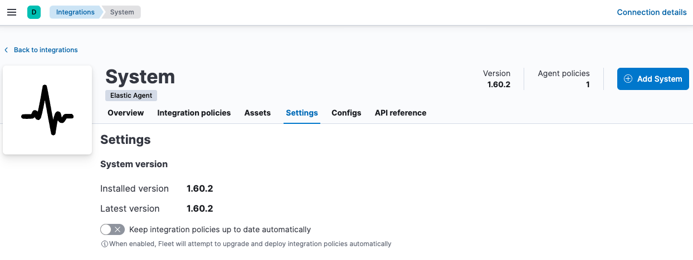

Upgrade an Elastic Agent integration
editBy default, Kibana requires an internet connection to download
integration packages from the Elastic Package Registry. Make sure the Kibana
server can connect to https://epr.elastic.co on port 443. If network
restrictions prevent Kibana from reaching the public Elastic Package Registry,
you can use a proxy server or host your own Elastic Package Registry. To learn
more, refer to Air-gapped environments.
Elastic releases Elastic Agent integration updates periodically. To use new features and capabilities, upgrade the installed integration to the latest version and optionally upgrade integration policies to use the new version.
In larger deployments, you should test integration upgrades on a sample Elastic Agent before rolling out a larger upgrade initiative.
Upgrade an integration to the latest version
edit- In Kibana, go to the Integrations page and open the Installed integrations tab. Search for and select the integration you want to upgrade. Notice there is a warning icon next to the version number to indicate a new version is available.
-
Click the Settings tab and notice the message about the new version.

-
Before upgrading the integration, decide whether to upgrade integration policies to the latest version, too. To use new features and capabilities, you’ll need to upgrade existing integration policies. However, the upgrade may introduce changes, such as field changes, that require you to resolve conflicts.
- Select Upgrade integration policies to upgrade any eligible integration policies when the integration is upgraded.
- To continue using the older package version, deselect Upgrade integration policies. You can still choose to upgrade integration policies manually later on.
-
Click Upgrade to latest version.
If you selected Upgrade integration policies and there are conflicts, upgrade integration policies manually and resolve the conflicts in the policy editor.
- After the upgrade is complete, verify that the installed version and latest version match.
You must upgrade standalone agents separately. If you used Kibana to create and download your standalone agent policy, see Upgrade standalone agent policies after upgrading an integration.
Keep integration policies up to date automatically
editSome integration packages, like System, are installed by default during Fleet setup. These integrations are upgraded automatically when Fleet detects that a new version is available.
The following integrations are installed automatically when you select certain options in the Fleet UI. All of them have an option to upgrade integration policies automatically, too:
- Elastic Agent - installed automatically when the default Collect agent logs or Collect agent metrics option is enabled in an Elastic Agent policy).
- Fleet Server - installed automatically when Fleet Server is set up through the Fleet UI.
- System - installed automatically when the default Collect system logs and metrics option is enabled in an Elastic Agent policy).
The Elastic Defend integration also has an option to upgrade installation policies automatically.
Note that for the following integrations, when the integration is updated automatically the integration policy is upgraded automatically as well. This behavior cannot be disabled.
For integrations that support the option to auto-upgrade the integration policy, when this option is selected (the default), Fleet automatically upgrades your policies when a new version of the integration is available. If there are conflicts during the upgrade, your integration policies will not be upgraded, and you’ll need to upgrade integration policies manually.
To keep integration policies up to data automatically:
- In Kibana, go to the Integrations page and open the Installed integrations tab. Search for and select the integration you want to configure.
-
Click Settings and make sure Keep integration policies up to data automatically is selected.
If this option isn’t available on the Settings tab, this feature is not available for the integration you’re viewing.
Upgrade integration policies manually
editIf you can’t upgrade integration policies when you upgrade the integration, upgrade them manually.
-
Click the Policies tab and find the integration policies you want to upgrade.

-
Click Upgrade to begin the upgrade process.
The upgrade will open in the policy editor.

- Make any required configuration changes and, if necessary, resolve conflicts. For more information, refer to Resolve conflicts.
- Repeat this process for each policy with an out-of-date integration.
Too many conflicts to resolve? Refer to the troubleshooting docs for manual steps.
Resolve conflicts
editWhen attempting to upgrade an integration policy, it’s possible that breaking changes or conflicts exist between versions of an integration. For example, if a new version of an integration has a required field and doesn’t specify a default value, Fleet cannot perform the upgrade without user input. Conflicts are also likely if an experimental package greatly restructures its fields and configuration settings between releases.
If Fleet detects a conflict while automatically upgrading an integration policy, it will not attempt to upgrade it. You’ll need to:
- Upgrade the integration policy manually.
-
Use the policy editor to fix any conflicts or errors.

-
Under Review field conflicts, notice that you can click previous configuration to view the raw JSON representation of the old integration policy and compare values. This feature is useful when fields have been deprecated or removed between releases.

- In the policy editor, fix any errors and click Upgrade integration.
-